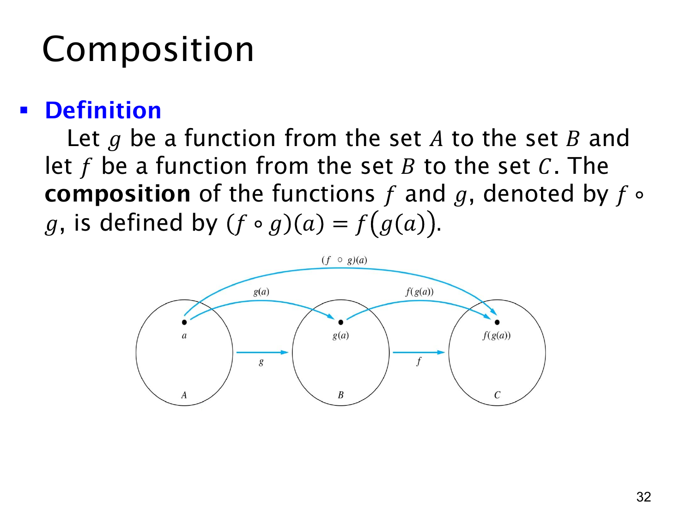

L1.4 · 第 32 页讲解原文
查看这一页课件

函数复合：先做 g，再做 f
若 g:A→B，f:B→C，就可以把两步连接起来得到从 A 到 C 的复合函数（composition）f∘g。其定义是
(f∘g)(a)=f(g(a))(a∈A).
运算顺序要从括号最内层读起：先对 a 应用 g，得到 g(a)∈B；再把这个结果交给 f，得到 f(g(a))∈C。课件图中从 A 的 a 经 g 箭头到 B 的 g(a)，再经 f 箭头到 C 的 f(g(a))；跨越两步的大箭头就是 f∘g。
例如若 g(x)=x+1，f(y)=y2，则 (f∘g)(x)=f(x+1)=(x+1)2。若反过来计算 (g∘f)(x)=g(x2)=x2+1，结果通常不同。因此 f∘g 的书写顺序与实际执行顺序相反，不能随意交换。
复合能成立还需要输入输出类型衔接。本页用 g:A→B、f:B→C 保证 g(a) 一定在 f 的定义域 B 内；若前一步的输出不在后一步的定义域中，表达式 f(g(a)) 就未必有定义。复合后的定义域是 A，陪域是 C。